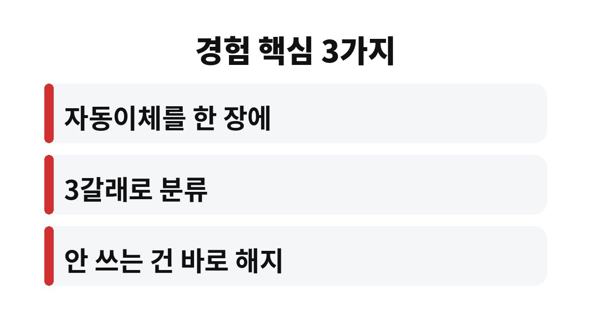
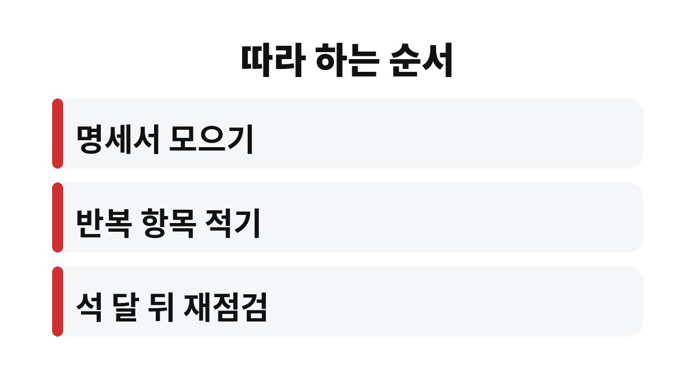

이 글은 외벌이로 아이를 키우면서 매달 어디서 돈이 새는지 몰라 답답한 가장을 위해 쓴 글입니다.
사업을 하는 가장으로서 저희 집 고정비를 직접 점검하며 정리한 순서를 공유합니다.
절약을 결심하면 대부분 식비와 외식비부터 줄이려 합니다.
하지만 한 번 줄여도 다음 달에 다시 늘어나는 변동비보다 고정비가 한번 정리하면 효과가 오래갑니다.
고정비는 의지가 아니라 설정으로 줄이는 돈입니다.
한 번 바꿔 두면 이후에는 아무 노력 없이도 매달 같은 효과가 이어진다는 점이 가장 큰 장점입니다.
그래서 저는 절약 목표를 세울 때 변동비보다 고정비를 먼저 보는 쪽으로 순서를 바꾸었습니다.
사업 때문에 정신없이 지내다 보니 가계 통장에서 빠져나가는 자동이체를 제대로 본 적이 없었습니다.
막상 한 줄씩 적어 보니 쓰지 않는데도 계속 나가는 항목이 있었습니다.
그날부터 고정비를 한 번에 정리하는 방법을 찾았습니다.
외벌이 가장에게 매달 나가는 작은 금액은 일 년으로 보면 결코 작지 않다는 것을 그때 실감했습니다.
아이가 자랄수록 교육비와 생활비가 늘어나기 때문에 고정비를 미리 다듬어 두는 일이 더 절실해졌습니다.
카드 명세서와 통장 자동이체 내역을 두세 달치 펼쳐 놓고 매달 반복되는 항목만 골라 적었습니다.
그리고 각 항목을 아래 표처럼 세 갈래로 나누었습니다.

| 분류 | 예시 | 처리 방법 |
|---|---|---|
| 꼭 필요 | 주거비·보험·통신비 | 조건이 바뀌었는지 점검만 |
| 줄일 수 있음 | 통신 요금제·보험 특약·구독 | 더 맞는 조건으로 변경 검토 |
| 안 쓰는데 나감 | 쓰지 않는 구독·자동결제 | 바로 해지 |
분류 기준은 제 가정에 맞춘 것이므로 각자의 생활 방식에 따라 달라질 수 있습니다.
줄일 수 있음 항목은 비교와 상담이 필요해서 시간이 걸렸습니다.
반면 안 쓰는데 나가는 항목은 해지만 하면 되기 때문에 가장 먼저 처리했습니다.
이 한 번의 정리만으로도 매달 나가는 돈이 눈에 띄게 줄었다고 느꼈습니다.
그다음에는 통신 요금제와 보험처럼 조건을 바꿀 수 있는 항목을 하나씩 확인했습니다.
한꺼번에 바꾸려 하면 지치기 때문에 한 주에 한 항목만 비교하는 규칙을 세웠습니다.
비교할 때는 가격만 보지 않고 지금 우리 가족이 실제로 쓰는 만큼인지를 먼저 따졌습니다.
고정비가 정리되자 매달 얼마가 확실히 나가는지 알게 되어 생활비 계획을 세우기 쉬워졌습니다.
아이들에게 쓰는 교육비와 비상금도 먼저 떼어 두는 구조로 바꿀 수 있었습니다.
월급날 직후 필요한 돈부터 따로 빼 두니 남은 돈으로 생활하는 습관이 자연스럽게 생겼습니다.
가족과 고정비 목록을 함께 보면서 불필요하다고 느끼는 항목을 솔직하게 이야기할 수 있었던 점도 좋았습니다.
정리한 목록은 석 달에 한 번 다시 꺼내 보는 습관으로 이어졌습니다.
고정비는 한 번 정리하고 끝내는 일이 아니라 생활이 바뀔 때마다 다시 맞추는 일이라는 점도 알게 되었습니다.
가장으로서 불안이 줄어든 것이 가장 큰 변화였습니다.

1. 최근 두세 달치 카드 명세서와 통장 자동이체 내역을 모읍니다.
2. 매달 반복되는 항목만 골라 한 장에 적습니다.
3. 꼭 필요, 줄일 수 있음, 안 쓰는데 나감으로 분류합니다.
4. 안 쓰는 항목은 오늘 바로 해지하고 줄일 항목은 한 주에 하나씩 비교합니다.
5. 석 달 뒤 같은 방식으로 다시 점검합니다.
함께 읽으면 좋은 글: 부가세 내는 달마다 잔고 0원이던 온라인 셀러, '통장 4개'로 세금 폭탄 끝낸 방법
고정비 줄이기는 한 번의 큰 결심보다 한 번의 꼼꼼한 점검이 효과가 오래갑니다.
거창한 절약보다 먼저 내 통장에서 무엇이 매달 빠져나가는지 확인해 보시기 바랍니다.
그 확인만으로도 가계의 방향이 달라질 수 있습니다.
※ 본 글은 2026년 기준 개인 경험을 바탕으로 한 정보이며, 세금·금융 상품 선택은 본인 상황에 맞게 전문가와 확인하시길 바랍니다.